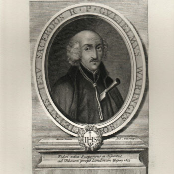

Isusovački blaženici
Svećenik
Bl. Vilim Harcourt
1610. – 1679.
William Harcourt, poznat i kao Barrow, ostao je u Londonu pomagati zatočenoj subraći. Stradao je nakon lažnih optužaba o navodnoj katoličkoj uroti.
Tekst je preveden i prilagođen uz pomoć umjetne inteligencije.

Izvor slike
- Spomendan
- 30. lipnja
- Zaštitništvo
- Nije navedeno u izvoru
- Životni vijek
- 1610. – 1679.
- Djelovanje
- Misije i evangelizacija · Svakodnevni rad i skrovita služba · Progoni i progonstvo · Mučeništvo
- Razdoblje
- 17. stoljeće
- Napomena o izvoru
- Zaglavlje navodi 30. lipnja 1679.; životopis Thomasa Whitbreada izričito ubraja Harcourta u skupinu pogubljenu 20. lipnja 1679.
- Rođenje — dostupni podaci
- 1610.; dan i mjesec nisu potvrđeni u provjerenom izvoru.
- Mjesto rođenja
- Lancashire, Engleska
- Datum smrti
- 30.06.1679.
- Mjesto smrti/mučeništva
- Tyburn, London, Engleska
- Okolnosti smrti/mučeništva
- Pogubljen vješanjem i sakaćenjem zbog katoličkoga svećeništva i djelovanja za progona.
- Uloga
- Svećenik
- Mučenik
- Da
- Ostale oznake
- Žrtva izmišljene Papističke urote Titusa Oatesa
- Pripadnost
- Isusovac
- Razlike u izvorima
- Datum smrti u podatcima zbirke: 30.06.1679. Raniji biografski izvor navodi 20.06.1679. Razlika izvora nije razriješena.
- Drugi oblici imena
- William Harcourt · William · William Barrow · William Waring
Životopis
William Harcourt, prezimenom Barrow i poznat i kao Waring, rođen je 1610. u Lancashireu. Nakon školovanja u Saint-Omeru stupio je 1632. u novicijat u Wattenu. Studirao je i zaredio se u Flandriji, a 1644. vratio u Englesku. Od 1671. do 1677. vodio je provincijske financije; 1678. postao je poglavar londonskih isusovaca.
Kad su lažne optužbe Titusa Oatesa izazvale progon, morao je mijenjati prebivalište i prerušavati se. Subraći je savjetovao odlazak u inozemstvo, ali je osobno ostao kako bi pomagao zatočenim isusovcima. Prokazala ga je služavka jedne kuće u kojoj se skrivao. Uhićen je 7. svibnja 1679., nakon približno trideset pet godina misijskoga rada u domovini.
Povijesni opis njegova suđenja pokazuje težak položaj obrane. Predsjedao je sudac Scroggs, a optužbu su podupirali Oates i drugi svjedoci povezani s izmišljenom urotom. Katoličkim se svjedocima unaprijed osporavala vjerodostojnost; povlašteno prihvaćanje iskaza optužbe otežavalo je dokazivanje nevinosti. Taj pravosudni okvir objašnjava kako je pastoralna služba pretvorena u navodni državni zločin.
Harcourt je pogubljen u Tyburnu 20. lipnja 1679. s Tomom Whitbreadom i još trojicom isusovaca. U crkvenom postupku koji je pokrenut 1886. pojavljuje se pod imenom William Harcourt, dok povijesni životopis čuva i njegova druga prezimena.
Tekst je preveden i prilagođen uz pomoć umjetne inteligencije.
Pročitaj više na izvornoj stranici ↗